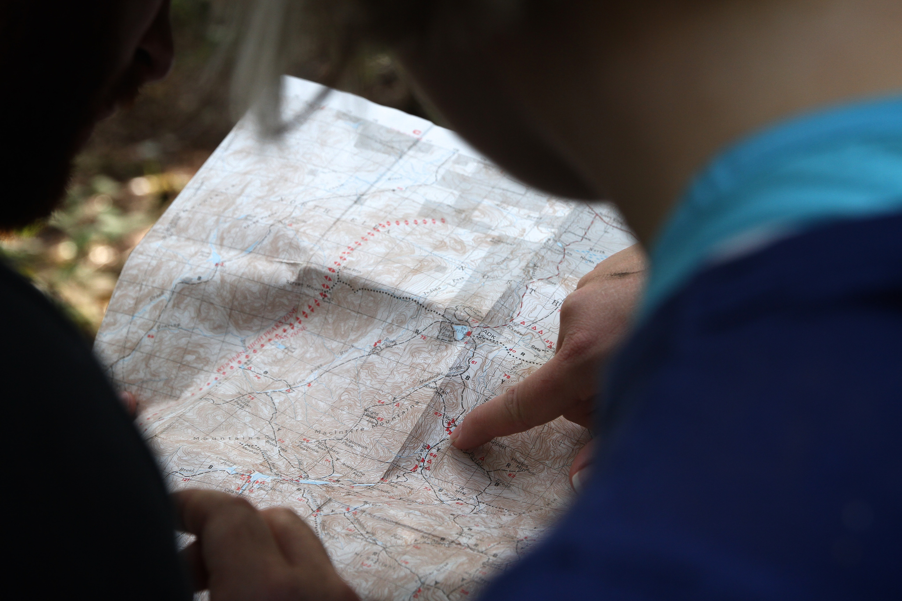

Fun fact about me, I have terrible sense of direction. Whenever I go someplace new, I budget for at least 15 minutes of getting lost. It happens so often that getting it right the first feels unnatural. A few highlights include the time I lost the bike trail and ended up biking on the highway (!!Do not try this at home!!), the one time I got lost kayaking on a lake (yes, that is possible), the time I spent finding my way in Osaka which was 100% of the time. I sometimes joke that someday I’ll end up in Idaho unknowingly (that’s like 600 miles from Seattle), but knowing myself it may not be that far-fetched. Let me tell you about few things I know about loosing yourself.
I recently got lost running on the mountain and it reminded me of how distressing it can be. Experiencing unfamiliar situations is already stressful as it is, not being where we want or are supposed to be makes it even worse. With so many unknowns, our brains tries to fill the gap with hypotheticals; what if I get kidnapped? what if I run out of supplies? what if I drown? what if I encounter a wild animal? what if hell freezes over? Although imagined, these threats seem real enough to trigger adrenaline rush. In the moment, the mind is singularly concerned with one thought. How do I get out of here?
So, how exactly do you get out of there when you don’t know where you are? Here is how I found my way. I knew my final destination was a specific trailhead and the plan was to get there as fast as possible. GPS would have helped, but the trail I was on wasn’t mapped, so for all we know I could have been heading to a dead end. Moving in any direction (even to more detours) seemed like a much better option than despair, so I kept running. In a lucky strike of events, I stumbled upon some hikers who were more than happy to set me off on the right path. Along the way I came across trail markers which further confirmed my heading, soon enough I was on familiar grounds. So to answer the question, you get there by combination of self-knowledge, wits and to some extent, luck. The details of where you are may be hazy but it is very important to know where you are headed. I was lucky to have encountered hikers, but it was very important to ask the right question. “I don’t know where I am can you help me get to [X] trailhead?”. Had I asked for directions to any trailhead they would have probably sent me the wrong way. “Lost” is defined not knowing one's wherebouts but I think not knowing one's destination is more fitting. When you know where you are headed, you can look for the right clues and ask the right questions.
Of course, this lesson doesn’t just apply to the trails. Sometimes we despair when we feel lost. Sometimes the fear of getting lost keeps us from trying new things. There is less to fear when you know your destination. Moreover, as unpleasant as it feels, getting lost can be a good thing. For starters, its temorary, you only get lost once (ok, maybe twice or a couple of times) but after a couple of tries it becomes familiar. Moreover, adrenaline-powered moments are ussually the most memorable. Most of my days are dull but I’ll never forget the day I biked on the highway. Oh, you know what you get after you’ve found your way? A kick of endorphins and a great deal of learnings. It is in such moments of ambiguity that we gain clarity.
So yeah, detours are great! At the very least, they’ll teach you something. Thanks for reading, watch out for my next trail inspired post, until then, get lost!